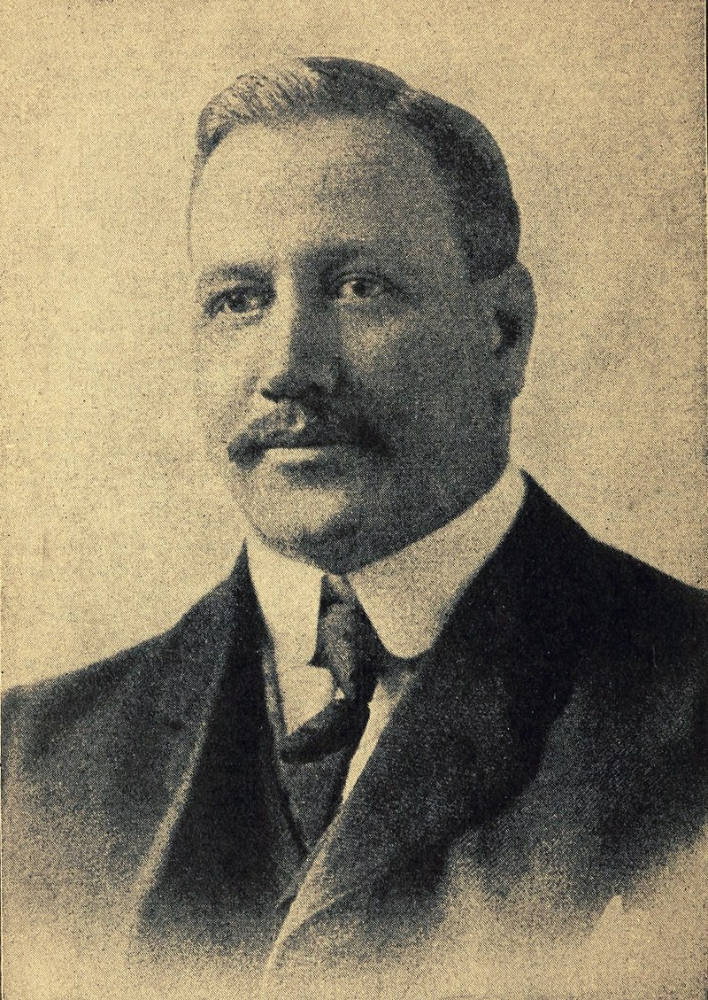
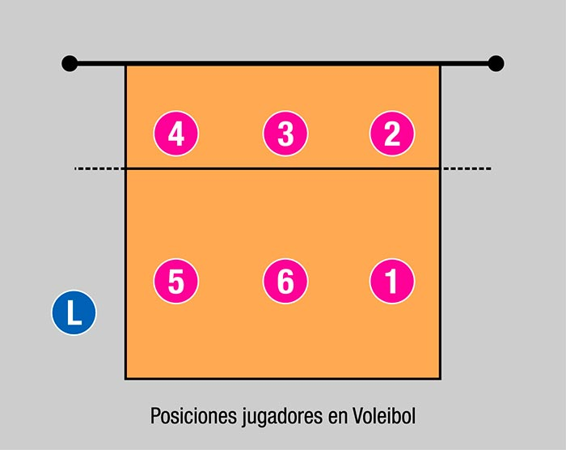

INTRODUCCION.
Es un deporte donde dos equipos se enfrentan sobre un terreno de juego liso separados por una red central, tratando de pasar el balón por encima de la red hacia el suelo del campo contrario.
El voleibol (inicialmente bajo el nombre de mintonette) nació el 9 de febrero de 1895 en Estados Unidos, en Holyoke, Massachusetts. Su inventor fue William G. Morgan, un director de educación física de la YMCA. Se trataba de un juego de interior por equipos con semejanzas al tenis o al balonmano.El voleibol (inicialmente bajo el nombre de mintonette) nació el 9 de febrero de 1895 en Estados Unidos, en Holyoke, Massachusetts. Su inventor fue William G. Morgan, un director de educación física de la YMCA. Se trataba de un juego de interior por equipos con semejanzas al tenis o al balonmano.
BIOGRAFIA.
William G. Morgan fue un destacado deportista y educador estadounidense, nacido el 23 de enero de 1870 en Lockport, Nueva York, y fallecido el 27 de diciembre de 1942. Es conocido principalmente por ser el creador del vóley, uno de los deportes más populares y practicados en todo el mundo. Morgan se graduó en la Universidad de Springfield, donde trabajó como director de educación física. En 1895, ideó el vóley como una alternativa al baloncesto, buscando un deporte menos físico pero igualmente estimulante. Originalmente llamado "mintonette", el juego fue diseñado para ser una opción más suave y menos lesiva que otros deportes de equipo de la época. El vóley se propagó rápidamente y, con el tiempo, evolucionó en un deporte con reglas establecidas y reconocimiento internacional. William G. Morgan dejó un legado duradero como innovador del vóley, y su contribución al mundo del deporte sigue siendo fundamental en la actualidad.
2.- Colocador (Setter): Función Principal: Establece la pelota para que los atacantes la golpeen. Es una posición estratégica y requiere habilidades técnicas y tácticas avanzadas. Número de Jugador: 2
3.- Central (Middle Blocker): Función Principal: Bloquea los ataques del equipo contrario en la red y realiza ataques desde el centro de la red. Número de Jugador: 3
4.- Zaguero Izquierdo (Left Back): Función Principal: Similar al zaguero derecho, es un buen defensor y recibe los saques. Número de Jugador: 4
5.- Atacante Exterior Izquierdo (Outside Hitter/Left Side Hitter): Función Principal: Realiza ataques desde la zona izquierda de la red y participa en bloqueos. Número de Jugador: 5
6.- Atacante Exterior Derecho (Opposite Hitter/Right Side Hitter): Función Principal: Realiza ataques desde la zona derecha de la red y participa en bloqueos. Número de Jugador: 6
7.- Líbero: Función Principal: Especialista defensivo que no puede realizar ataques o bloqueos en la red. Su función principal es la recepción y la defensa. Número de Jugador: No tiene un número específico y suele tener un uniforme diferente.

MEJORES JUGADAS.
| 1. Giba | Brasil | Altura: 190 cm (6,23 pies) |
|---|---|---|
| 2. Karch Kiraly | Estados Unidos | Altura: 188 cm (6,17 pies) |
| 3. Lorenzo Bernardi | Italia | Altura: 199 cm (6,53 pies) |
| 4. Sergio Dutra Santos | Brasil | Altura: 184 cm (6,04 pies) |
| 5. Iván Milijkovic | Serbia | Altura: 206 cm (6,76 pies) |
| 6. Dante Amaral | Brasil | Altura: 201 cm (6,59 pies) |
| 7. Viacheslav Zaytsev | Rusia | Altura: 191 cm (6,27 pies) |
| 8. Andrea Giani | Italia | Altura: 196 cm (6,43 pies) |
| 9. Tomasz Wójtowicz | polonia | Altura: 197 cm (6,46 pies) |
| 10. Valerio Vermiglio | Italia | Altura: 190 cm (6,23 pies) |